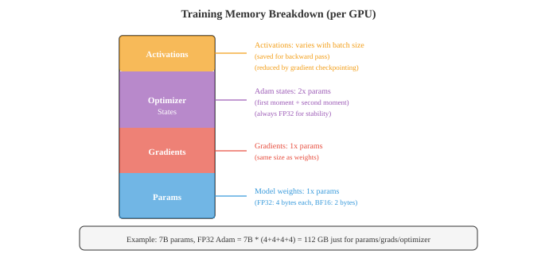
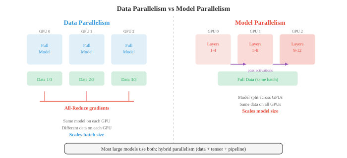

Distributed Deep Learning（分布式深度学习）¶
分布式训练将计算分散到多个 GPU 和机器上，以训练对于单台设备来说太大或太慢的模型。本节涵盖混合精度、数据并行、模型并行、流水线并行、ZeRO、FSDP、张量并行以及像 all-reduce 这样的通信原语——这些是大规模训练 LLM 的基础。
-
在单个 GPU 上训练大型神经网络最终会遇到瓶颈。模型可能无法放入内存中，或者训练可能需要几个月的时间。分布式训练将工作分散到多个设备（GPU、TPU 或整台机器）上，以更快地训练并训练更大的模型。本文件涵盖了使之成为可能的技术。
-
要理解为什么分布式很重要，可以从训练的计算成本（computational cost）开始。对批大小为 \(B\) 的样本在有 \(d_{\text{in}}\) 个输入和 \(d_{\text{out}}\) 个输出的密集层上进行单次前向传播，大约需要 \(2 \cdot B \cdot d_{\text{in}} \cdot d_{\text{out}}\) 次 FLOPs（浮点运算）：输出矩阵的每个元素各需要一次乘法和一次加法。反向传播的成本大约是前向传播的两倍（计算相对于输入和权重的梯度），因此密集层上的一个训练步骤大约是 \(6 \cdot B \cdot d_{\text{in}} \cdot d_{\text{out}}\) FLOPs。
-
对于隐藏维度为 \(d\) 的 Transformer 层，自注意力块包含四个投影（Q、K、V 和输出），每个花费 \(O(B \cdot n \cdot d^2)\) FLOPs（其中 \(n\) 是序列长度），加上注意力矩阵计算 \(O(B \cdot n^2 \cdot d)\)。前馈块有两个密集层，通常扩展到 \(4d\) 然后缩回：\(O(B \cdot n \cdot 8d^2)\)。每层的总计：大约 \(O(B \cdot n \cdot 12d^2 + B \cdot n^2 \cdot d)\)。乘以层数，你就会明白为什么训练 GPT 规模的模型需要数千个 GPU 小时。
-
内存墙（memory wall）通常是更严格的约束。在训练期间，GPU 内存必须同时容纳四样东西：

- 参数（Parameters）：模型权重。FP32（每个参数 4 字节）格式的 70 亿参数模型仅权重就需要 28 GB。
- 梯度（Gradients）：与参数大小相同。又需要 28 GB。
- 优化器状态（Optimizer states）：Adam 维护两个额外的缓冲区（一阶和二阶矩估计），每个都与参数大小相同。为了数值稳定性，即使模型使用较低的精度，这些也保存在 FP32 中。对于我们的 7B 模型，那是 \(2 \times 28 = 56\) GB。
-
激活（Activations）：在前向传播期间保存的中间值，以供反向传播使用。其大小取决于批量大小、序列长度和模型宽度。这通常是最大的部分，并且随批量大小线性增长。
-
对于使用 FP32 Adam 的 7B 模型：28（参数）+ 28（梯度）+ 56（优化器）= 112 GB，这还没算上激活。单个 80 GB A100 GPU 无法容纳它。这就是分布式策略必不可少的原因。
-
混合精度训练（Mixed precision training）是第一道防线。与将所有内容存储在 FP32（32 位浮点）中不同，你使用 FP16 或 BF16（16 位）进行前向和反向传播，同时在 FP32 中保留权重的副本以进行优化器更新。
-
FP16 具有高精度（10 位尾数）但范围有限，这可能会导致溢出/下溢。损失缩放（在反向传播之前将损失乘以一个大因子，然后用同一因子除以梯度）可以缓解这种情况。
-
BF16 (brain float) 具有与 FP32 相同的指数范围（8 位指数），但精度较低（7 位尾数）。它几乎从不溢出，也很少需要损失缩放，使其使用起来更简单。BF16 是现代 Transformer 训练的默认选项。
-
混合精度将激活和梯度的内存（前向/反向传播期间的主要成本）粗略减半，同时将优化器状态保留在 FP32 中以保证数值稳定性。
-
数据并行（Data parallelism）是最简单的分布式策略。你在 \(N\) 个 GPU 上复制整个模型，将每个小批量（mini-batch）分成 \(N\) 个相等的块，并将一块发送给每个 GPU。每个 GPU 独立地对其块运行前向和反向传播。然后通过对所有 GPU 的梯度取平均（使用 all-reduce 操作），每个 GPU 更新其本地模型副本。
-
从模型的角度来看，这相当于使用大 \(N\) 倍的小批量进行训练。如果每个 GPU 处理大小为 \(B\) 的批次，则有效批量大小为 \(N \cdot B\)。

-
梯度平均可以同步或异步完成。同步 SGD（Synchronous SGD）等待所有 GPU 完成后再进行平均，从而确保在数学上等同于使用大批量的单 GPU 训练。缺点是最慢的 GPU（“落后者”）会拖慢所有人。
-
异步 SGD（Asynchronous SGD）让每个 GPU 独立地更新共享的参数服务器，无需等待。这消除了落后者的问题，但引入了“陈旧梯度”：GPU 可能会基于稍微过时的参数计算梯度。陈旧梯度会增加噪声并减慢收敛速度。在实践中，首选具有高效通信的同步 SGD。
-
梯度累加（Gradient accumulation）是在有限硬件上模拟较大批量大小的软件技巧。与其每个小批量进行一次更新，不如运行几次前向/反向传播并累加梯度，然后执行一次更新。这在不需要为激活使用更多 GPU 内存的情况下给出了与大批量相同的结果（内存中一次只保留一个小批量的激活）。
-
当模型本身太大而无法容纳在单个 GPU 上时，你需要模型并行（model parallelism）。主要有两种变体。
-
张量并行（Tensor parallelism）在 GPU 之间拆分单个层。大型矩阵乘法 \(Y = XW\) 可以按列拆分：在两个 GPU 上将 \(W\) 划分为 \([W_1, W_2]\)，并行计算 \(Y_1 = XW_1\) 和 \(Y_2 = XW_2\)，然后拼接。这适用于注意力投影和前馈层。它需要 GPU 之间的高速通信（通常是节点内的 NVLink），因为必须在每一层组合部分结果。
-
流水线并行（Pipeline parallelism）将不同层分配给不同 GPU。GPU 0 运行层 1-4，GPU 1 运行层 5-8，依此类推。数据像流水线一样流过流水线。朴素的方法存在“流水线气泡”：当 GPU 0 为微批次 1 处理前向传播时，GPU 1-3 处于空闲状态。微批处理（Micro-batching）通过将小批量分成更小的微批次并依次流过流水线，从而在大部分时间保持所有 GPU 忙碌来缓解这一问题。
-
混合并行（Hybrid parallelism）结合了数据、张量和流水线并行。一个典型的大型模型设置可能会在节点内（8 个由快速 NVLink 连接的 GPU）使用张量并行，在节点间使用流水线并行，并在节点组间使用数据并行。这就是像 GPT-4 和 Llama 这样的模型的训练方式。
-
分布式训练的效率在很大程度上取决于通信（communication）。关键操作是 all-reduce：给定 \(N\) 个 GPU 上每个的一个值，计算总和（或平均值）并将结果分发给所有 GPU。
-
一个简单的 all-reduce 将所有数据发送到一个 GPU，对其求和，然后再广播回去。这在通信上是 \(O(N)\)，并在根节点产生了瓶颈。
-
环形（Ring）all-reduce 效率高得多。将 \(N\) 个 GPU 排列成一个环。每个 GPU 将其数据分成 \(N\) 个块。在 \(N - 1\) 步内，每个 GPU 向其邻居发送一个块，并从其另一个邻居接收一个块，累加部分和。在接下来的 \(N - 1\) 步后，完整的总和会传播到所有 GPU。每个 GPU 传输的总数据量为数据大小的 \(2(N-1)/N\) 倍，随着 \(N\) 的增长趋近于 \(2\times\)。关键在于，这不会随着 \(N\) 的增加而增加，使其达到带宽最佳状态。

-
参数服务器（Parameter servers）是一种替代架构，其中专用服务器节点保存模型参数。工作节点计算梯度并将其发送给服务器，服务器更新参数并将其发回。这更加简单，但会在服务器端造成通信瓶颈。
-
NCCL（NVIDIA Collective Communications Library，NVIDIA 集合通信库）是用于 GPU 之间通信的标准库。它提供了 all-reduce、all-gather、broadcast 及其他集体操作的优化实现，能自动根据网络拓扑结构选择最佳算法。
-
缩放定律（Scaling laws）描述了模型性能如何随计算量、数据量和模型大小而提升。最初的 Kaplan 等人（2020）的缩放定律发现，损失随着每一个呈幂律减少：
-
其中 \(N\) 是参数数量，\(D\) 是数据集大小，\(C\) 是计算预算。
-
Chinchilla 缩放定律（Hoffmann 等人，2022）表明，大多数模型训练不足：对于给定的计算预算，你应该在比以前认为更多的数据上训练较小的模型。最佳比率约为每个参数 20 个标记（token）。一个 7B 模型应该看到大约 140B 个标记，而不是 Llama 1 针对 65B 模型使用的 300B 标记。这一发现使该领域转向了“计算最优（compute-optimal）”训练。
-
混合专家（MoE，Mixture of Experts）是一种扩展模型容量但不成比例地扩大计算量的架构。与每个 Transformer 层使用一个前馈网络不同，你有 \(N\) 个“专家”网络（每个都是标准的 FFN）。一个门控网络（gating network）（路由器）检查每个标记并将其发送给前 \(K\) 个专家（通常 \(K = 1\) 或 \(K = 2\)）。

-
总参数数量大得多（因为你有 \(N\) 个专家），但每个标记的 FLOPs 保持大致恒定（因为每个标记只激活 \(K\) 个专家）。例如，Mixtral 8x7B 有 47B 总参数，但每次前向传播只使用大约 13B 参数，从而以较小模型的成本获得了大得多的模型的性能。
-
MoE 引入了诸多挑战。负载均衡（Load balancing）：如果路由器将大部分标记发送给同一个专家，其他专家就会被浪费。辅助损失（auxiliary loss）鼓励均匀路由。通信（Communication）：不同的专家可能驻留在不同的 GPU 上，因此路由标记需要 all-to-all 通信，这很昂贵。
-
当在数千个 GPU 上的训练持续数周或数月时，容错（Fault tolerance）至关重要。如果单个 GPU 发生故障，你不想丢失所有进度。检查点（Checkpointing）定期将模型权重、优化器状态和训练状态（学习率、步数、数据位置）保存到磁盘上。如果发生故障，你从最新的检查点重启。
-
梯度检查点（Gradient checkpointing）（也称为激活重计算）是一种内存优化，而不是容错机制。在前向传播期间，不是为反向传播保存所有激活，而是仅在特定的检查点保存激活。在反向传播期间，你从检查点重新计算缺失的激活。这以计算换取内存：它将前向传播成本增加约 33%，但可以将激活内存减少 \(\sqrt{L}\) 倍（其中 \(L\) 是层数）。
-
综上所述，训练前沿模型结合了所有这些技术：BF16 混合精度，数千个 GPU 上的带有环形 all-reduce 的数据并行，节点内张量并行，节点间流水线并行，用于减少内存的梯度检查点，用于参数效率的 MoE，以及用于容错的常规检查点保存。系统工程与算法设计一样具有挑战性。
-
分布式训练工具包总结：
| 技术（Technique） | 作用（What It Does） | 权衡（Tradeoff） |
|---|---|---|
| 混合精度（Mixed precision，BF16） | 使激活/梯度的内存减半 | 轻微的数值差异 |
| 数据并行（Data parallelism） | 在 GPU 间扩展批量大小 | 梯度同步的通信开销 |
| 张量并行（Tensor parallelism） | 在 GPU 间拆分层 | 需要高速互连 |
| 流水线并行（Pipeline parallelism） | 在 GPU 间拆分模型阶段 | 流水线气泡（浪费计算） |
| 梯度累加（Gradient accumulation） | 模拟大批量 | 较慢（多次前向/反向传播） |
| 梯度检查点（Gradient checkpointing） | 减少激活内存 | 约增加 33% 计算量 |
| 环形 All-reduce（Ring all-reduce） | 高效的梯度平均 | 对于大型模型受限于带宽 |
| 混合专家（MoE） | 更多容量，相同的 FLOPs | 负载均衡，路由的复杂性 |
| 缩放定律（Scaling laws） | 指导计算量分配 | 经验性，不一定在所有规模下适用 |
Coding Tasks（编程练习，使用 CoLab 或 notebook）¶
-
计算一个 Transformer 层的 FLOPs 和内存需求。给定隐藏维度 \(d\)、序列长度 \(n\)、批量大小 \(B\) 和层数，估计总的训练成本。
import jax.numpy as jnp def transformer_layer_flops(d, n, B): """近似单层 Transformer 前向传播的 FLOPs。""" # QKV 投影：3 * (B * n * d * d) * 2 (乘加) qkv_flops = 3 * 2 * B * n * d * d # 注意力：QK^T 为 (B * n * n * d) * 2，attn*V 为 (B * n * n * d) * 2 attn_flops = 2 * 2 * B * n * n * d # 输出投影：(B * n * d * d) * 2 out_flops = 2 * B * n * d * d # FFN：两层，d->4d 和 4d->d: 2 * (B * n * d * 4d) * 2 ffn_flops = 2 * 2 * B * n * d * 4 * d return qkv_flops + attn_flops + out_flops + ffn_flops def transformer_layer_memory(d, n, B, dtype_bytes=2): """近似单层激活的内存（字节）。""" # QKV: 3 * B * n * d qkv_mem = 3 * B * n * d * dtype_bytes # 注意力权重：B * heads * n * n (约等于 B * n * n * sizeof) attn_mem = B * n * n * dtype_bytes # FFN 中间层：B * n * 4d ffn_mem = B * n * 4 * d * dtype_bytes return qkv_mem + attn_mem + ffn_mem # 示例：GPT-2 规模 d, n, B, L = 1024, 1024, 8, 24 fwd_flops = transformer_layer_flops(d, n, B) total_flops = 3 * L * fwd_flops # 3x 针对前向 + 反向 act_mem = L * transformer_layer_memory(d, n, B) param_count = L * (12 * d * d + 13 * d) # 近似值 print(f"模型: d={d}, n={n}, B={B}, L={L}") print(f"参数量: {param_count / 1e6:.0f}M") print(f"每步 FLOPs: {total_flops / 1e12:.2f} TFLOPs") print(f"激活内存: {act_mem / 1e9:.2f} GB (BF16)") print(f"参数内存 (FP32): {param_count * 4 / 1e9:.2f} GB") print(f"Adam 优化器内存: {param_count * 8 / 1e9:.2f} GB") print(f"总训练内存: {(param_count * 16 + act_mem) / 1e9:.2f} GB") -
模拟数据并行训练。跨多个“虚拟 GPU”拆分数据集，独立计算梯度，对它们取平均，并验证结果是否与单 GPU 训练匹配。
import jax import jax.numpy as jnp # 简单的线性模型：y = wx + b key = jax.random.PRNGKey(0) X = jax.random.normal(key, (64, 4)) w_true = jnp.array([1.0, -2.0, 3.0, 0.5]) y = X @ w_true + 0.1 * jax.random.normal(key, (64,)) def loss_fn(w, X, y): return jnp.mean((X @ w - y) ** 2) grad_fn = jax.grad(loss_fn) # 单 GPU：全批量梯度 w = jnp.zeros(4) grad_single = grad_fn(w, X, y) # 数据并行：跨 4 个“GPU”拆分 n_gpus = 4 chunk_size = len(X) // n_gpus grads = [] for i in range(n_gpus): X_chunk = X[i*chunk_size:(i+1)*chunk_size] y_chunk = y[i*chunk_size:(i+1)*chunk_size] grads.append(grad_fn(w, X_chunk, y_chunk)) # All-reduce：平均梯度 grad_parallel = jnp.mean(jnp.stack(grads), axis=0) print("单 GPU 梯度:", grad_single) print("数据并行梯度（平均）:", grad_parallel) print(f"是否匹配: {jnp.allclose(grad_single, grad_parallel, atol=1e-5)}") # 训练两者并比较 w_single, w_parallel = jnp.zeros(4), jnp.zeros(4) lr = 0.1 for step in range(100): w_single = w_single - lr * grad_fn(w_single, X, y) grads = [grad_fn(w_parallel, X[i*chunk_size:(i+1)*chunk_size], y[i*chunk_size:(i+1)*chunk_size]) for i in range(n_gpus)] avg_grad = jnp.mean(jnp.stack(grads), axis=0) w_parallel = w_parallel - lr * avg_grad print(f"\n100 步之后:") print(f"单 GPU 权重: {w_single}") print(f"数据并行权重: {w_parallel}") print(f"最大差值: {jnp.max(jnp.abs(w_single - w_parallel)):.2e}") -
实现一个简单的混合专家（MoE）层。创建一个门控网络，将标记路由给前 K 个专家，并组合它们的输出。
import jax import jax.numpy as jnp def expert_fn(x, W1, b1, W2, b2): """简单的 2 层 FFN 专家。""" h = jnp.maximum(0, x @ W1 + b1) # ReLU return h @ W2 + b2 def moe_layer(x, gate_W, experts_params, top_k=2): """ MoE 前向传播。 x: (batch, d_model) gate_W: (d_model, n_experts) experts_params: 每个专家的 (W1, b1, W2, b2) 列表 """ n_experts = len(experts_params) # 门控：计算路由得分 gate_logits = x @ gate_W # (batch, n_experts) gate_probs = jax.nn.softmax(gate_logits, axis=-1) # 选择前 K 个 top_k_indices = jnp.argsort(-gate_probs, axis=-1)[:, :top_k] top_k_probs = jnp.take_along_axis(gate_probs, top_k_indices, axis=-1) # 重新归一化 top_k_probs = top_k_probs / jnp.sum(top_k_probs, axis=-1, keepdims=True) # 计算专家输出（简化的做法：运行所有专家，随后通过掩码丢弃不用部分） expert_outputs = jnp.stack([ expert_fn(x, *experts_params[i]) for i in range(n_experts) ], axis=1) # (batch, n_experts, d_model) # 收集 top-K 专家输出并赋予权重 batch_idx = jnp.arange(x.shape[0])[:, None] selected_outputs = expert_outputs[batch_idx, top_k_indices] # (batch, top_k, d_model) output = jnp.sum(selected_outputs * top_k_probs[:, :, None], axis=1) return output, gate_probs # 设置 key = jax.random.PRNGKey(42) batch, d_model, d_ff, n_experts = 8, 16, 32, 4 # 初始化专家 experts_params = [] for i in range(n_experts): k1, k2, key = jax.random.split(key, 3)[0], jax.random.split(key, 3)[1], jax.random.split(key, 3)[2] experts_params.append(( jax.random.normal(k1, (d_model, d_ff)) * 0.1, jnp.zeros(d_ff), jax.random.normal(k2, (d_ff, d_model)) * 0.1, jnp.zeros(d_model), )) key, subkey = jax.random.split(key) gate_W = jax.random.normal(subkey, (d_model, n_experts)) * 0.1 x = jax.random.normal(key, (batch, d_model)) output, gate_probs = moe_layer(x, gate_W, experts_params, top_k=2) print(f"输入形状: {x.shape}") print(f"输出形状: {output.shape}") print(f"门控概率（第一个样本）: {gate_probs[0]}") print(f"专家使用情况（批次平均）:") for i in range(n_experts): usage = jnp.mean(gate_probs[:, i]) print(f" 专家 {i}: {usage:.3f}")